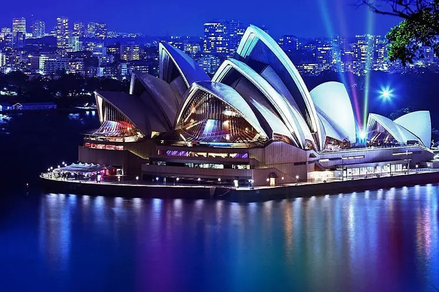

Sydney
Sydney is een bekende stad in Australië en die bekend staat om zijn unieke geografie, biodiversiteit en cultuur.
.svg)
hier zijn een paar feiten over Australie
1
Australië is het grootste eiland en het kleinste continent ter wereld. Het bevindt zich in het zuidelijk halfrond, omringd door de Indische Oceaan in het westen en de Stille Oceaan in het oosten.
2
Het land heeft een breed scala aan geografie, van uitgestrekte woestijnen zoals de Simpson Desert in het binnenland, tot tropische regenwouden in het noorden en de beroemde Great Barrier Reef langs de oostkust.
3
De hoofdstad van Australië is Canberra, hoewel veel mensen denken dat het Sydney of Melbourne is. Canberra werd gekozen als de hoofdstad in 1908, deels omdat het tussen deze twee grote steden ligt.
4
Australië is beroemd om zijn unieke dieren. Enkele van de beroemdste zijn de koala, kangoeroe, wombat, dingo en platypus (een ei-leggend zoogdier).
5
Australië werd oorspronkelijk bevolkt door inheemse volken, maar de Europese kolonisatie begon in 1788 toen het Britse schip First Fleet landde in Botany Bay (nu onderdeel van Sydney).
Bezienswaardigheden
Sydney Opera House
Sydney Harbour Bridge
Bondi Beach

Royal Botanic Garden
.jpeg)
The Rocks
.jpeg)